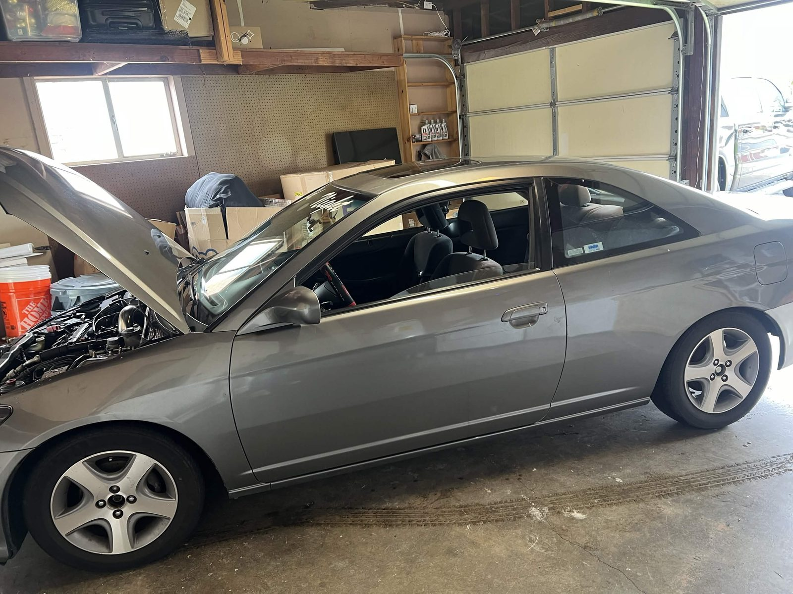
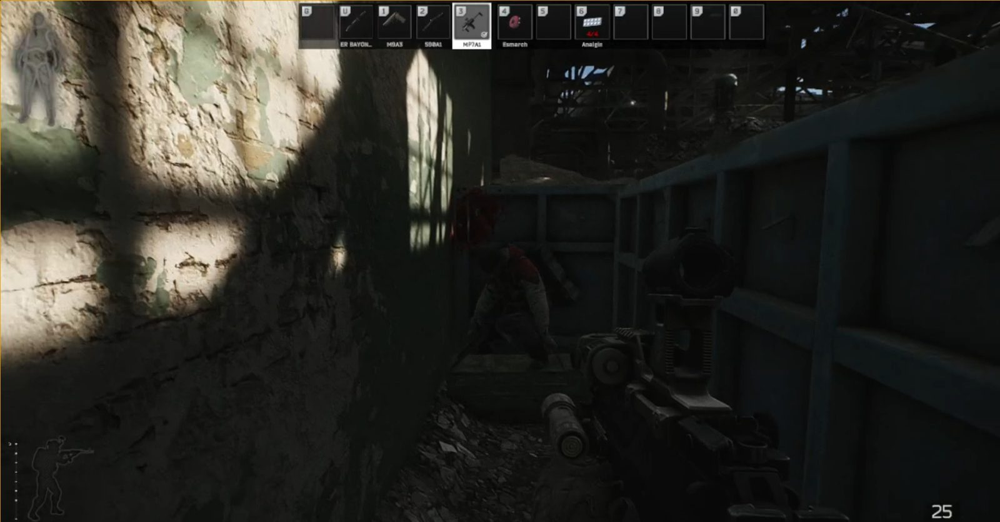
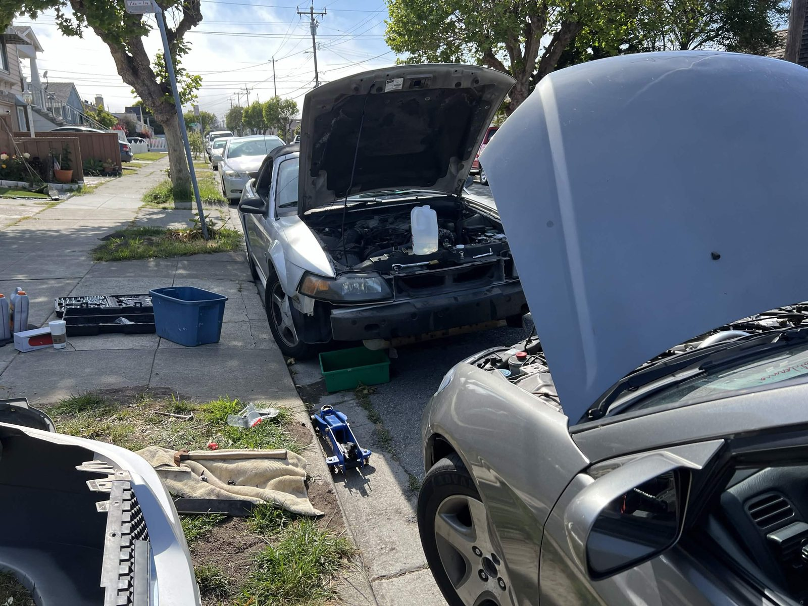

Off the Clock
Two interests that look unrelated at a glance and turn out to be the same exercise wearing different clothes.

The Build
The Civic came to him with a blown head, which is exactly why it was the right car to buy. Nothing on it is precious, so every repair is a place to try something he has not done before without a customer waiting on the result.
Done So Far
- Race suspension
- Rally gear ratios for shorter acceleration
- Cold air intake
- Rear seats pulled, rear bumper and one rim painted white
Next is an ECU swap. The factory unit is locked by Honda, and nothing else on the list can happen until it is open.

Tactical Realism
The interest traces back to his father, a veteran, and to seven years as a Police Explorer beginning at thirteen. He grew up measuring what games showed him against what he had been told.
Standard shooters fail that comparison. Nobody in them cares about consequence, and consequence is the thing that produces the rush he is actually after. Realism titles restore it: rushing a room gets you killed, and the only way through is to clear it correctly.
Two Cars, One Curb

His Civic at right, a friend's Mustang at left, both opened up on the same afternoon. It is the build in progress rather than finished, and it makes a point the other photographs miss: this is something he does alongside people, not alone in a garage.
A diagnosis, a drill, and a cleared room are the same exercise. Each one asks whether the person doing it will follow the sequence to the end when a shortcut is available.